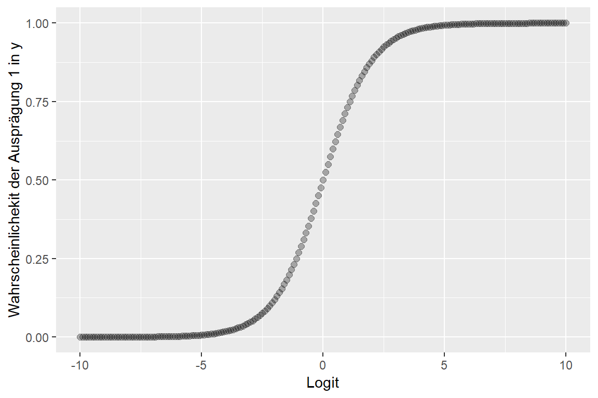
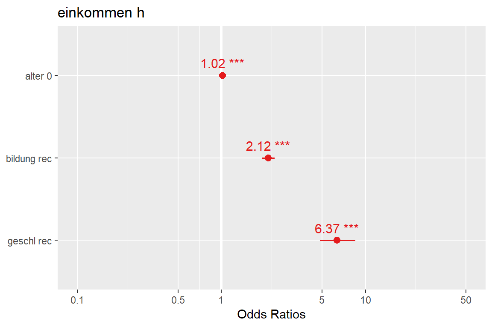
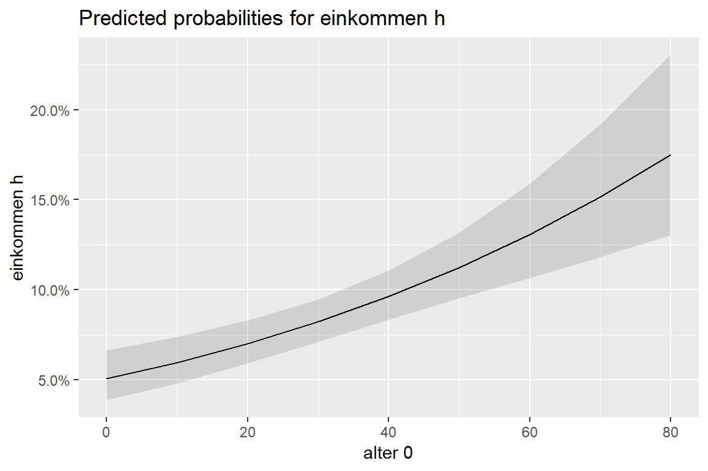
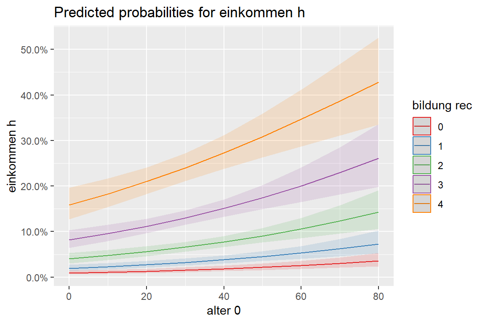
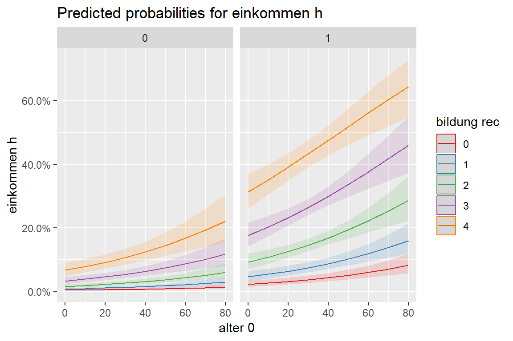
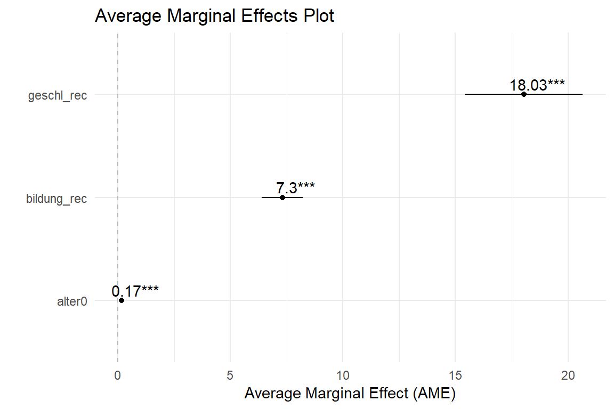

Die logistische Regression kann anfangs Kopfschmerzen verursachen. Während die Struktur und die Idee der “normalen” Regression entsprechen, kann die Interpretation der b’s (d.h. der Regressionskoeffizienten) schwieriger sein.
Dieser Post bietet eine praktische Funktion zum Konvertieren der logits (das wird von ´glm´ ausgegeben) in eine Wahrscheinlichkeit.
#install.packages("pacman")
#pacman::p_install_gh("favstats/tidytemplate")
pacman::p_load(tidyverse, magrittr, haven, sjPlot, sjmisc, ggeffects, texreg, car, psych, knitr, labelled, broom, margins, tidytemplate)Achtung wenn ihr nicht Rstudio Cloud benutzt: für viele der Funktionen hier braucht ihr die aktuellste Version von tidytemplate
Installieren könnt ihr diese auf folgende Weise:
allbus <- read_spss("../../data/allbus2014.sav")
allb_sub <- allbus %>%
select(V84, V86, V81, V419) %>%
rename(alter = V84,
bildung = V86,
geschl = V81,
einkommen = V419) %>%
mutate(alter0 = alter - 18,
bildung_rec = ifelse(bildung == 6 | bildung == 7, NA, bildung - 1),
geschl_rec = ifelse(geschl == 2, 0, 1)) %>%
mutate_all(as.numeric) # alle Werte als numerisch ausgebenallb_sub %<>%
mutate(einkommen_h = ifelse(einkommen > 2500, 1, 0))
allb_sub %>%
janitor::tabyl(einkommen_h) %>%
kable()| einkommen_h | n | percent | valid_percent |
|---|---|---|---|
| 0 | 2655 | 0.7649092 | 0.8662316 |
| 1 | 410 | 0.1181216 | 0.1337684 |
| NA | 406 | 0.1169692 | NA |
Tipp: Der
%<>%Operator aus demmagrittrpackage erspart ein wenig Tipparbeit. Stattdessen könnten wir auch (wie üblich) schreiben:
Die Syntax für ein logistisches Modell ähnelt sehr der Syntax für ein lineares Modell. Man benutzt einfach die Funktion glm() (steht für generalized linear model) und spezifiziert am Ende family = "binomial" um ein Modell für ein dichotomes logistisches Modell zu berechnen.
mod1 <- glm(einkommen_h ~ bildung_rec + geschl_rec + alter0,
data = allb_sub, family = "binomial")
htmlreg(mod1,
# better for html in markdown
doctype = FALSE,
html.tag = FALSE,
head.tag = FALSE)| Model 1 | ||
|---|---|---|
| (Intercept) | -5.64*** | |
| (0.26) | ||
| bildung_rec | 0.75*** | |
| (0.05) | ||
| geschl_rec | 1.85*** | |
| (0.14) | ||
| alter0 | 0.02*** | |
| (0.00) | ||
| AIC | 1969.52 | |
| BIC | 1993.60 | |
| Log Likelihood | -980.76 | |
| Deviance | 1961.52 | |
| Num. obs. | 3039 | |
| p < 0.001, p < 0.01, p < 0.05 | ||
Wenn der Koeffizient (logit) positiv ist, ist der Effekt dieses Prädiktors positiv und umgekehrt.
Hier sind die Koeffizienten positiv, was anzeigt, dass sowohl höhere Bildung und Alter sowie männliches Geschlecht die Wahrscheinlichkeit erhöht in einer höheren Einkommensklasse zu sein (Einkommen > 2500). Neben der Signifikanz der Koeffizienten, lässt sich aus dem logit allerdings nicht direkt (zumindest nicht intuitiv) die Stärke des Effekts ablesen sondern nur die Richtung.
Die folgenden 3 Schritte konvertieren einen logit-Koeffizienten in eine Wahrscheinlichkeit:
1. Extrahiere die logit-Koeffizienten
2. Berechne zunächst das \(\hat z_i\) (vorhergesagter logit) und dann damit die Odds \(e^{\hat z_i}\)
3. Berechne die Wahrscheinlichkeit mit Hilfe der Odds \(\frac{e^{\hat z_i}}{1 +e^{\hat z_i}}\)
Frage: Wie wahrscheinlich ist es, dass eine 30-Jährige Frau mit höchster Bildung ein Netto-Einkommen über 2500 Euro pro Monat bekommt?
1. Extrahiere die logit-Koeffizienten
Um es ein bisschen zu vereinfachen habe ich eine kleine Funktion geschrieben, welche die Koeffizienten im wide Format ausgibt:
tidy_wide <- function(model) {
model_wide <- tidy(model) %>% # tidy extrahiert die Parameter
select(term, estimate) %>% # wir brauchen nur die logit-koeffs
spread(term, estimate) %>% # konvertieren in wide format
rename(intercept = `(Intercept)`) # umbenennen
return(model_wide) # gib model_wide aus
}Die tidy_wide Funktion befindet sich im tidytemplate package. Wenn ihr die Rstudio Cloud benutzt, dann ist diese schon vorinstalliert und geladen.
Probieren wir die Funktion doch einmal aus:
| intercept | alter0 | bildung_rec | geschl_rec |
|---|---|---|---|
| -5.640335 | 0.0172347 | 0.7498078 | 1.851376 |
2. Berechne zunächst das \(\hat z_i\) (vorhergesagter logit) auf folgende Art und Weise:
\[\hat z_i = a + b \times X_i\]
mod1_wide %<>%
mutate(z = intercept + 12 * alter0 + 4 * bildung_rec + 0 * geschl_rec)
mod1_wide %>%
kable()| intercept | alter0 | bildung_rec | geschl_rec | z |
|---|---|---|---|---|
| -5.640335 | 0.0172347 | 0.7498078 | 1.851376 | -2.434287 |
Wenn wir die vorhergesagten logits (\(\hat z_i\)) berechnet haben, können wir diese benutzen um die Odds zu erhalten. Odds (Chancen) sind einfach die eulersche Zahl hoch die logits (wird mit exp() berechnet)
\[e^{\hat z_i} = Odds\]
| intercept | alter0 | bildung_rec | geschl_rec | z | odds |
|---|---|---|---|---|---|
| -5.640335 | 0.0172347 | 0.7498078 | 1.851376 | -2.434287 | 0.0876602 |
Die Chance, dass eine 30 Jährige Frau mit höchstem Bildungsabschluss ein hohes Einkommen erhält ist
3. Jetzt wo die Odds bekannt sind, können diese einfach in Warscheinlichkeiten umgerechnet werden mit der folgenden Formel:
\[p_i(y=1) = \frac{1}{1 + e^{- \hat z_i}} = \frac{e^{\hat z_i}}{1 +e^{\hat z_i}} = Wahrscheinlichkeit\]
Das Ergebnis ist die Wahrscheinlichkeit, dass die Ausprägung 1 (hier: hohes Einkommen) unter den angegeben Prädiktoren eintritt.
Formel 1
| intercept | alter0 | bildung_rec | geschl_rec | z | odds | p |
|---|---|---|---|---|---|---|
| -5.640335 | 0.0172347 | 0.7498078 | 1.851376 | -2.434287 | 0.0876602 | 0.0805952 |
Formel 2
| intercept | alter0 | bildung_rec | geschl_rec | z | odds | p |
|---|---|---|---|---|---|---|
| -5.640335 | 0.0172347 | 0.7498078 | 1.851376 | -2.434287 | 0.0876602 | 0.0805952 |
Oder als Funktion (im tidytemplate package enthalte):
logit2prob <- function(logit) { # logit ist der input
odds <- exp(logit) # e hoch logit = odds
prob <- odds / (1 + odds) # odds / 1 + odds = Wahrscheinlichkeit
return(prob) # gibt Wahrscheinlichkeit zurück
}Anwendung:
| intercept | alter0 | bildung_rec | geschl_rec | z | odds | p |
|---|---|---|---|---|---|---|
| -5.640335 | 0.0172347 | 0.7498078 | 1.851376 | -2.434287 | 0.0876602 | 0.0805952 |
Laut Model 1 beträgt die Wahrscheinlichkeit für eine 30 - Jährige Frau mit höchstem Bildungsabschluss über 2500 Euro im Monat zu verdienen 8.06%.
1 0.08059523
Ganz einfach!
Einfach den dazugehörigen logit-Koeffizienten als Hochzahl für die eulersche Zahl nehmen!
\[e^{b_i} = Odds Ratios\]
Beispiel:
Um schnell die Odds Ratios für unsere Koeffizienten zu erhalten können wir ganz einfach tidy aus dem broom package benutzen.
| term | estimate | std.error | statistic | p.value |
|---|---|---|---|---|
| (Intercept) | -5.6403353 | 0.2563134 | -22.005622 | 0.000000 |
| bildung_rec | 0.7498078 | 0.0517355 | 14.493088 | 0.000000 |
| geschl_rec | 1.8513756 | 0.1434395 | 12.907018 | 0.000000 |
| alter0 | 0.0172347 | 0.0035245 | 4.889965 | 0.000001 |
Die Spalte estimate gibt den Logit-Koeffizienten an. Daher berechnen wir folgendermaßen die Odds Ratios:
| term | estimate | std.error | statistic | p.value | odds_ratio |
|---|---|---|---|---|---|
| (Intercept) | -5.6403353 | 0.2563134 | -22.005622 | 0.000000 | 0.0035517 |
| bildung_rec | 0.7498078 | 0.0517355 | 14.493088 | 0.000000 | 2.1165932 |
| geschl_rec | 1.8513756 | 0.1434395 | 12.907018 | 0.000000 | 6.3685742 |
| alter0 | 0.0172347 | 0.0035245 | 4.889965 | 0.000001 | 1.0173841 |
Die Chance ein hohes Einkommen zu haben für jemanden der gar keinen Bildungsabschluss hat ist 2.12 mal höher im Vergleich zu jemanden mit einem Hauptschulabschluss.
Die Odds Ratios sind tatsächlich gleich für jeden Sprung auf der x-Achse.
Ein paar interessante Werte:
Denke daran, dass \(e^1 ≈ 2.71\). Das heißt, wenn der Logit 1 ist, liegen die Chancen bei ca. 2,7 zu 1, so ist die Wahrscheinlichkeit \(\frac{2.7}{1 + 2.7}\), also ca. 0.73 oder 73%.
Ähnlich interessant ist ein Logit von 0, was die folgenden Odds ergibt: \(e^0 = 1\). Daher liegen die Chancen 1 : 1, d.h. bei 50%.
Wenn der logit also negativ ist, liegt die zugehörige Wahrscheinlichkeit unter 50% und umgekehrt (positives logit <-> Wahrscheinlichkeit über 50%).
Das lässt sich auch schematisch in einer Tabelle darstellen:
logit_seq <- seq(-10, 10, by = 2)
prob_seq <- round(logit2prob(logit_seq), 3)
df <- data.frame(Logit = logit_seq,
Wahrscheinlichkeit = prob_seq)
kable(df)| Logit | Wahrscheinlichkeit |
|---|---|
| -10 | 0.000 |
| -8 | 0.000 |
| -6 | 0.002 |
| -4 | 0.018 |
| -2 | 0.119 |
| 0 | 0.500 |
| 2 | 0.881 |
| 4 | 0.982 |
| 6 | 0.998 |
| 8 | 1.000 |
| 10 | 1.000 |
Oder als Grafik:
logit_seq <- seq(-10, 10, by = .1)
prob_seq <- logit2prob(logit_seq)
df <- data.frame(Logit = logit_seq,
Wahrscheinlichkeit = prob_seq)
ggplot(df) +
aes(x = logit_seq, y = prob_seq) +
geom_point(size = 2, alpha = .3) +
labs(x = "Logit", y = "Wahrscheinlichekit der Ausprägung 1 in y")
sjPlotMit dem Package sjPlot lässt sich auch eine logistische Regression sehr schön darstellen. Man muss dazu nichts zusätzlich angeben, da die Funktion automatisch ein logistisches Modell entdeckt und die entsprechenden Werte zurückgibt.

Die Wahrscheinlichkeiten mit zunehmenden Alter

Die Wahrscheinlichkeiten mit zunehmenden Alter und Bildung

Die Wahrscheinlichkeiten mit zunehmenden Alter, Bildung, getrennt nach Geschlecht

Hierzu zunächst eine Hifsfunktion (ist im tidytemplate package enthalten)
plot_ame <- function(mod1) {
model_dat <- margins(mod1) %>% summary()
model_dat %>%
mutate(AME = AME * 100) %>%
mutate(lower = lower * 100) %>%
mutate(upper = upper * 100) %>%
mutate(stars = tidytemplate::get_stars(p)) %>%
mutate(AME_label = round(AME, 2)) %>%
mutate(AME_label = paste0(AME_label, stars)) %>%
ggplot() +
geom_point(aes(factor, AME)) +
geom_errorbar(aes(x = factor, ymin = lower, ymax = upper), width = 0) +
geom_hline(yintercept = 0, linetype = "dashed", color = "darkgrey", alpha = 0.75) +
geom_text(aes(factor, AME, label = AME_label), nudge_y = 0.6, nudge_x = 0.1) +
theme_minimal() +
coord_flip() +
labs(x = "", y = "Average Marginal Effect (AME)", title = "Average Marginal Effects Plot")
}Die Anwendung ist einfach:

So können wir interpretieren, dass die Wahrscheinlichkeit in einer hohen Einkommensstufe zu sein um 18.03% für einen Mann im Vergleich zu einer Frau steigt. Die Wahrscheinlichkeit in einer hohen Einkommensstufe zu sein nimmt im Schnitt 7.3% für jede Bildungsstufe zu.